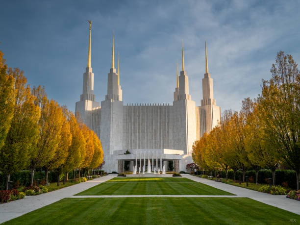
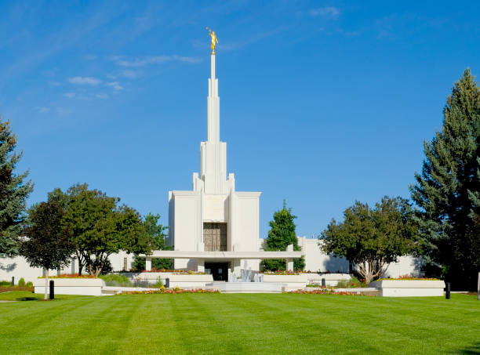
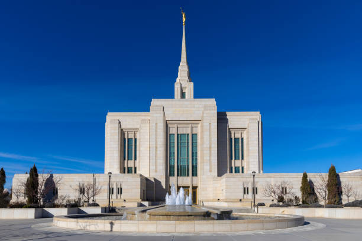
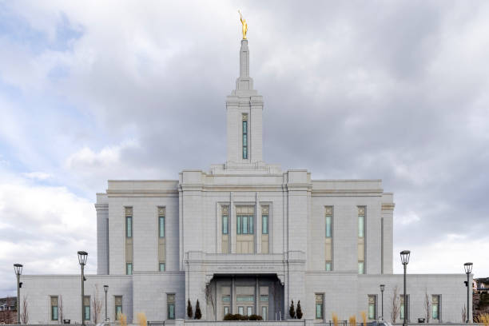
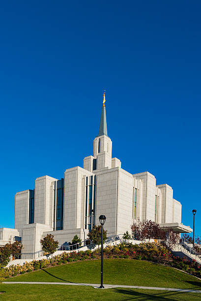
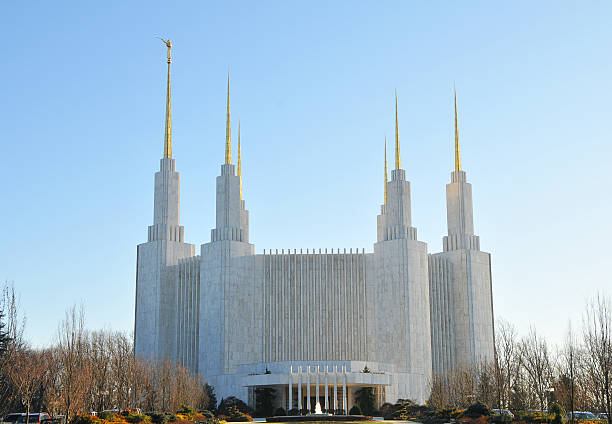
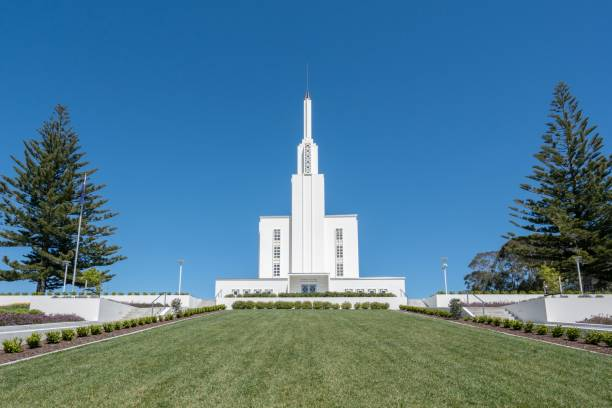
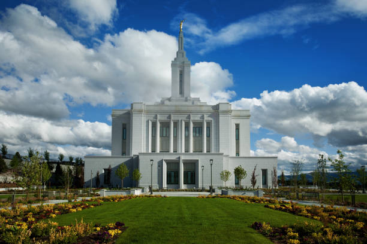
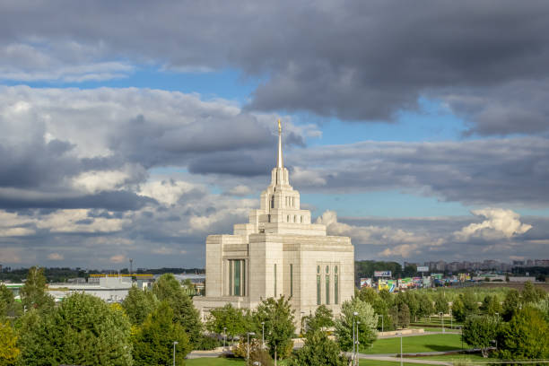

Temple Album
Home
Old
New
Large
Small
Home

Majestic Temple View

Peaceful Temple Grounds

Golden Hour Temple

Skyward Temple Spires

Garden Temple Vista

Architectural Masterpiece

Natural Beauty Temple

Perfect Light Temple

Temple Panorama View